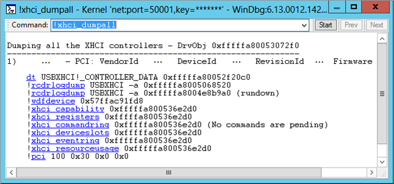

The !usb3kd.xhci_dumpall command displays information about all USB 3.0 host controllers on the computer. The display is based on the data structures maintained by the USB 3.0 host controller driver (UsbXhci.sys).
!usb3kd.xhci_dumpall [1]
Parameters
Examples
The following screen shot show the output of the !xhci_dumpalll command.

The output shows that there is one USB 3.0 host controller.
The output uses Using Debugger Markup Language (DML) to provide links. The links execute commands that give detailed information about the state of the host controller as it is maintained by the USB 3.0 host controller driver. For example, you could get detailed information about the host controller capabilities by clicking the !xhci_capability link. As an alternative to clicking a link, you can enter a command. For example, to see information about the host controller's resource usage, you could enter the command !xhci_resourceusage 0xfffffa800536e2d0.
DLL
Usb3kd.dll
Remarks
The !xhci_dumpall command is the parent command for this set of commands.
- !xhci_capability
- !xhci_info
- !xhci_deviceslots
- !xhci_commandring
- !xhci_eventring
- !xhci_transferring
- !xhci_trb
- !xhci_registers
- !xhci_resourceusage
The information displayed by the !xhci_dumpall family of commands is based on data structures maintained by the USB 3.0 host controller driver. For information about the USB 3.0 host controller driver and other drivers in the USB 3.0 stack, see USB Driver Stack Architecture. For an explanation of the data structures used by the drivers in the USB 3.0 stack, see Part 2 of the USB Debugging Innovations in Windows 8 video.
See also